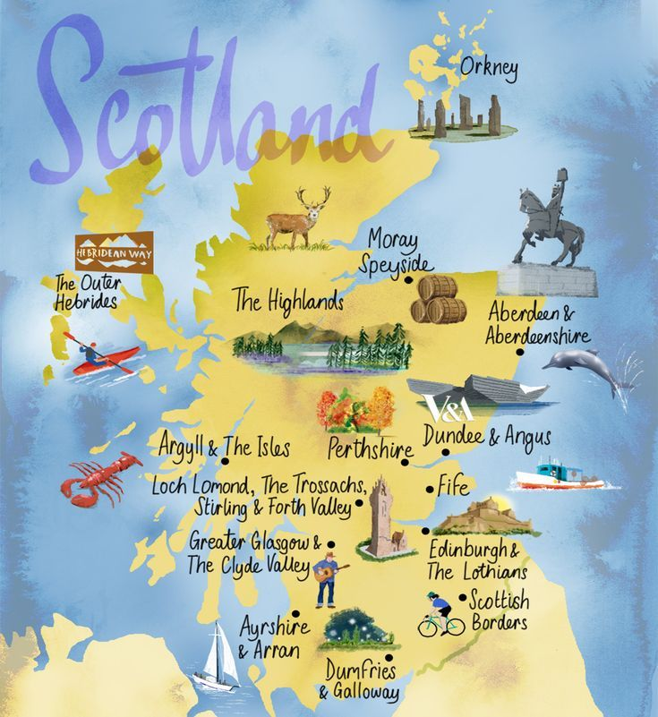
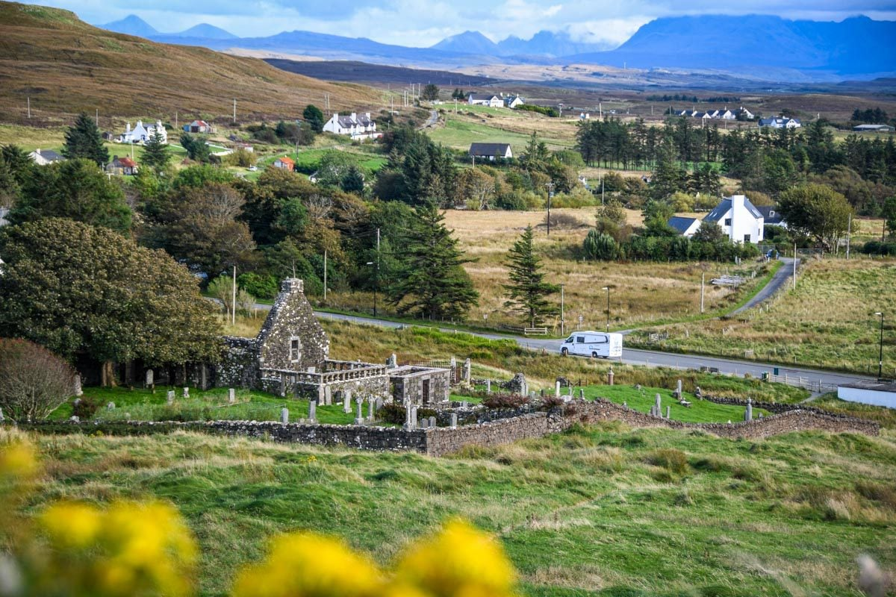
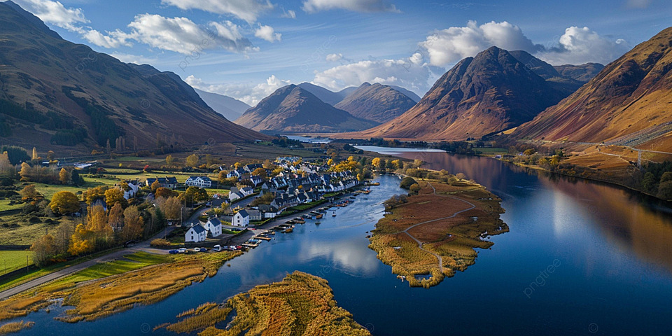
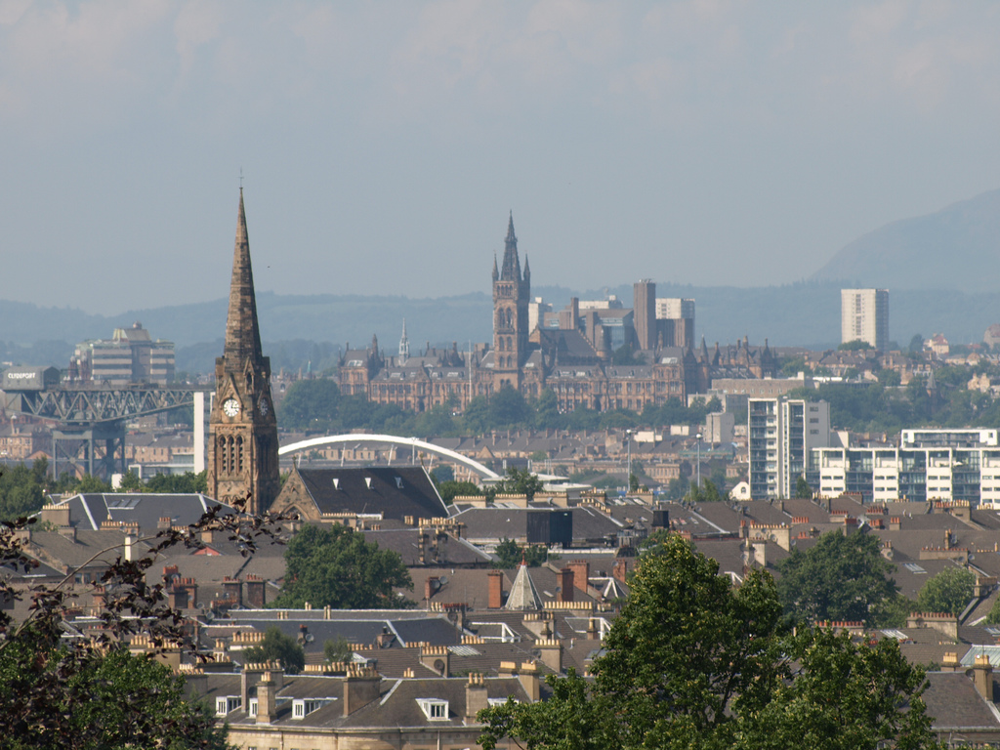
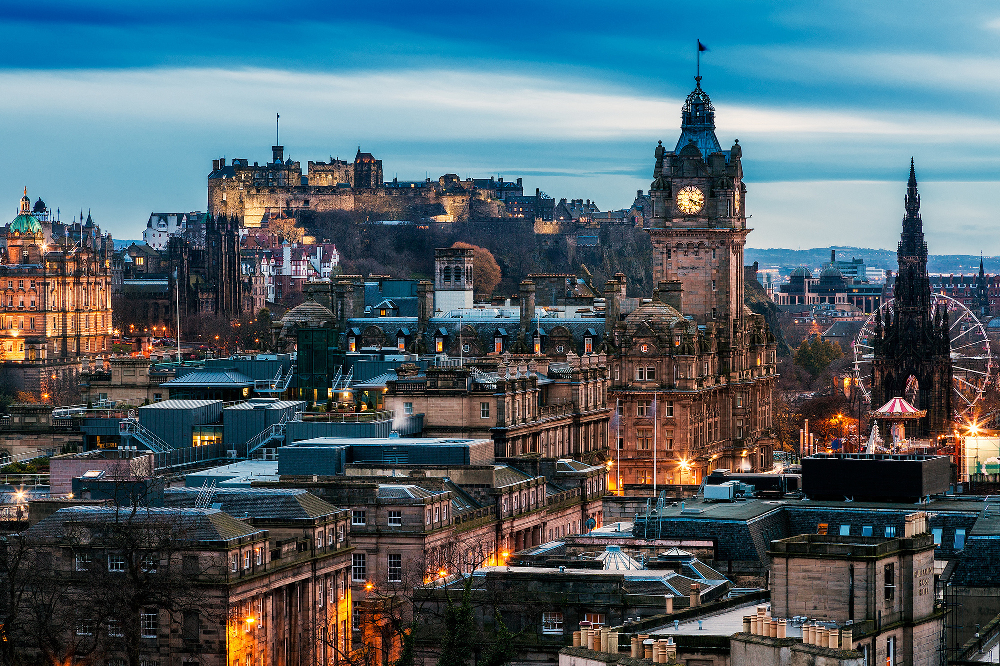

What Is Scotland?:
Scotland isn't just a country slapped on a map - it's a layered, living place shaped by land, language and a very particular sense of self.
It may be ancient — but do not mistake it for static. Scotland is defined less by borders than by continuity of memory; it occupies the northern third of the island of Great Britain, but its sense of self long predates modern nation-states.

Human presence in Scotland stretches back more than ten millennia. Over time it was layered, inhabited, contested and shaped by successive peoples whose cultures interwove rather than erased one another.
The sharp division between the Scottish Highlands and Lowlands has shaped different ways of living.
The Highlands consist of mountains and small kin-based communities where loyalty and mutual obligations are key.


The Lowlands, on the other hand, consist of more developed and accessible towns and city centres with trade networks and early institutions of governance and learning.

